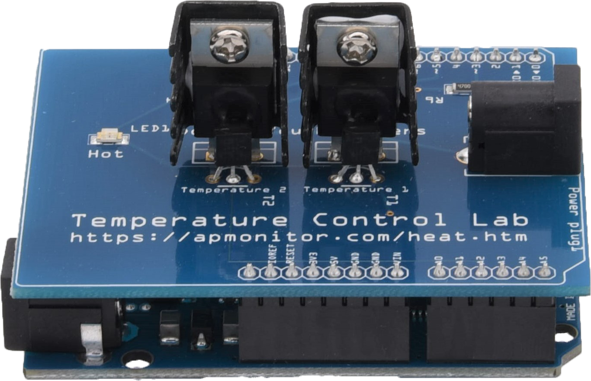
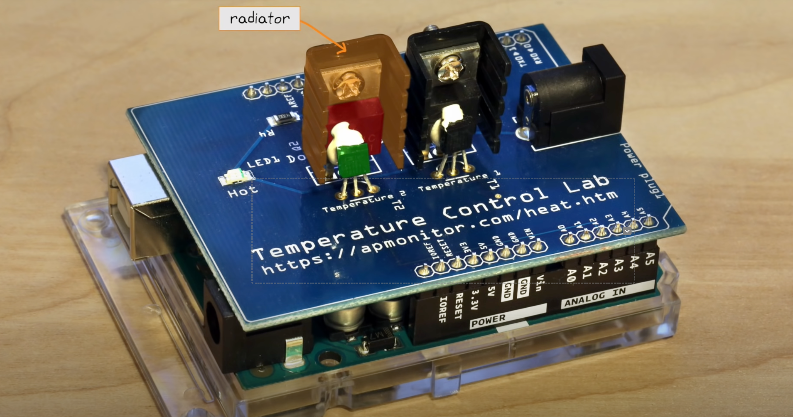

La risorsa principale per TCLab è disponibile su apmonitor.com.
Nelle sezioni successive esploreremo le complessità della modellazione dinamica, comprendendo le risposte del sistema e l’implementazione di varie strategie di controllo.
Il nostro approccio comporterà l’utilizzo della programmazione Python per interagire con l’hardware TCLab, condurre analisi dei dati e visualizzare in modo efficace i comportamenti del sistema.
Cos’è TCLab?
TCLab è una configurazione da laboratorio compatta che include un microcontrollore Arduino, riscaldatori, sensori di temperatura e un LED. È progettato per apprendere e applicare i principi dell’ingegneria di controllo in modo pratico.
L’hardware del Laboratorio di controllo della temperatura è costituito da cinque componenti:
Microcontrollore Arduino (Arduino Uno, Arduino Leonardo o equivalenti): funge da cervello della configurazione.
La scheda plug-in del Laboratorio di controllo della temperatura (nota anche come scudo). Include:
Riscaldatori: forniscono energia termica al sistema.
Sensori di temperatura: misura la temperatura del sistema.
LED: indicatore visivo per determinate azioni o stati.
Alimentatore USB da cinque watt.
Cavo di alimentazione da 5,5 mm a USB.
Cavo dati USB 2.0. (con connettore mini-USB per Arduino Uno o cavo micro-USB per Arduino Leonardo.)
Prima di procedere, assicurati di completare i passaggi delineati in Configurazione hardware come descritto in TCLab README.
Gli utenti Mac OS potrebbero dover installare un driver seriale disponibile qui.
Normalmente lo scudo TCLab sarà già montato sulla scheda Arduino e il driver del firmware sarà stato caricato su Arduino.

Comprendere il kit TCLab
I componenti principali di TCLab
Il Temperature Control Lab (TCLab) è un sistema integrato composto da diversi componenti chiave, ciascuno dei quali contribuisce in modo significativo alla sua funzionalità:
Microcontrollore Arduino:
Scopo: Serve come unità di elaborazione centrale per TCLab.
Funzionalità: elabora i dati di input dai sensori di temperatura e gestisce il funzionamento dei riscaldatori.
Connettività: utilizza una connessione USB per il trasferimento dei dati e consente il controllo in tempo reale tramite script Python.
Riscaldatori:
Descrizione: TCLab è dotato di due riscaldatori, ciascuno in grado di generare energia termica regolabile.
Ruolo: Agire come principale fonte di calore per gli esperimenti, replicando scenari che richiedono la regolazione della temperatura. Funzionano come gli attuatori del sistema.
Sensori di temperatura:
Tipo: questi sensori sono termistori, un tipo di resistore la cui resistenza varia con le variazioni di temperatura.
Intervallo di misurazione: in grado di misurare temperature comprese tra $ -40^$C e \(150^\circ\)C.
Funzionalità: posizionato vicino a ciascun riscaldatore per misurare con precisione la temperatura, fornendo un feedback essenziale per il controllo della temperatura.
Dissipatori di calore:
Tipo: Composto da dissipatori di calore a transistor.
Scopo: impiegato per dissipare in modo efficiente il calore lontano dai transistor.
LED (diodo a emissione luminosa):
Scopo: Serve come indicatore visivo per vari stati o azioni, come segnalare l’attivazione di un riscaldatore.
Configurazioni operative di TCLab
TCLab può essere configurato in varie modalità a seconda degli obiettivi formativi:
Ingresso singolo Uscita singola (SISO):
Utilizza solo un riscaldatore e un sensore. Ideale per semplici esperimenti di controllo e per apprendere le basi del controllo della temperatura.
Ingresso singolo Uscita singola (SISO) con disturbo:
Utilizza un riscaldatore/sensore come sistema di controllo primario e il secondo riscaldatore come fonte di disturbo esterno. Questa configurazione è utile per comprendere come i fattori esterni influenzano i sistemi di controllo.
Ingressi multipli Uscite multiple (MIMO):
Implica l’utilizzo simultaneo di riscaldatori e sensori. Questa configurazione più avanzata non è trattata qui ma è utile per studi di sistemi di controllo complessi.
Ogni componente del TCLab svolge un ruolo specifico, rendendolo uno strumento versatile per insegnare e sperimentare vari aspetti dell’ingegneria di controllo. Sia per l’apprendimento fondamentale che per l’esplorazione avanzata, TCLab offre una piattaforma pratica per comprendere la dinamica e il controllo dei sistemi basati sulla temperatura.

Come funziona TCLab
Flusso operativo:
Segnale di ingresso: uno script Python invia un comando ad Arduino, impostando il livello di potenza desiderato per i riscaldatori.
Azione di riscaldamento: i riscaldatori generano calore corrispondente ai comandi del livello di potenza ricevuti.
Misurazione della temperatura: i termistori misurano le temperature risultanti vicino ai riscaldatori.
Ciclo di feedback: queste letture della temperatura vengono inviate al computer.
Regolazioni: l’algoritmo di controllo nello script Python regola la potenza del riscaldatore in base al feedback della temperatura, cercando di raggiungere e mantenere una temperatura target.
[Inserisci qui il diagramma di flusso o il diagramma che mostra il ciclo di feedback]
Sezione 2: Uno sguardo approfondito ai componenti TCLab
2.1 Microcontrollore Arduino
Descrizione dettagliata: Fornisci dettagli sul modello Arduino utilizzato in TCLab, le sue capacità e i suoi limiti
Obiettivi:
Modellazione dinamica con equazioni di bilancio
La differenza tra controllo manuale e automatico
Test di passaggio per generare dati dinamici
Adattamento dei dati dinamici a un modello First Order Plus Dead Time (FOPDT).
Ottenimento dei parametri per il controllo PID dalle regole di ottimizzazione standard
Ottimizzazione del controller PID per migliorare le prestazioni
Descrizione dell’hardware TCLab
Includere uno schema a blocchi
Configurazione di TCLab
Questa guida fornisce istruzioni passo passo per configurare il Laboratorio di Controllo della Temperatura (TCLab), partendo dall’installazione di Python su diversi sistemi operativi fino alla conduzione dei test iniziali con TCLab e il suo simulatore.
Sezione 1: Installazione di Python utilizzando Conda
Esegui programma di installazione: apri Terminale, vai alla directory contenente il file scaricato ed esegui lo script utilizzando bash Anaconda3-XXXX.sh.
Per verificare che l’ambiente sia stato installato correttamente, è possibile utilizzare:
conda env list
Installazione del pacchetto TCLab
Attivazione dell’ambiente:
Assicurati che il tuo ambiente Anaconda sia attivo. Apri il tuo Terminale (o il prompt di Anaconda su Windows) e attiva il tuo ambiente:
conda attiva tclab_env
Installazione di TCLab:
La libreria tclab è fondamentale per l’interfacciamento con l’hardware del Laboratorio di controllo della temperatura. Installalo inserendo il seguente comando:
pip installa tclab
Premi Invio per eseguire il comando e completare l’installazione.
Installazione di librerie utili aggiuntive
Per un’esperienza completa con TCLab e per supportare vari aspetti dell’ingegneria di controllo e dell’analisi dei dati, verranno installate anche le seguenti librerie:
insensibile:
Significato: una libreria fondamentale per i calcoli numerici in Python.
Comando di installazione:
pip installa numpy
matplotlib:
Significato: fondamentale per creare rappresentazioni visive dei dati, in particolare per l’analisi degli esperimenti TCLab.
Comando di installazione:
pip installa matplotlib
scipy:
Significato: fornisce un’ampia gamma di strumenti per il calcolo scientifico, compresi metodi per risolvere equazioni differenziali ordinarie, utili nella modellizzazione dei sistemi.
Comando di installazione:
pip installa scipy
panda:
Significato: offre funzionalità estese per la manipolazione e l’analisi dei dati, ideali per la gestione di set di dati complessi.
Comando di installazione:
pip installa panda
geco:
Significatività: pacchetto avanzato per l’ottimizzazione e il controllo, adatto all’implementazione di strategie di controllo predittivo del modello.
Comando di installazione:
pip installa gekko
Schemi TCLab
Test iniziali con TCLab
Passaggio 1: collega TCLab
Connetti TCLab: collega il dispositivo TCLab al computer utilizzando un cavo USB.
Passaggio 2: testare la connessione TCLab
Scrivi script di prova:
Apri il tuo IDE Python o Jupyter Notebook.
Scrivi il seguente codice Python ed esegui lo script. Se stampa la temperatura, TCLab è collegato correttamente.
import tclabwith tclab.TCLab() as lab:print(f"Connected! Heater 1 is at {lab.T1}°C")
TCLab version 1.0.0
--- Serial Ports ---
/dev/cu.BLTH n/a n/a
/dev/cu.BlueBeatsStudio n/a n/a
/dev/cu.Bluetooth-Incoming-Port n/a n/a
Installa simulatore: nel terminale o nel prompt di Anaconda, digita nuovamente pip install tclab (include il simulatore).
Script di prova con simulatore:
from tclab import setup, clockTCLab = setup(connected=False, speedup=5)with TCLab() as lab:for t in clock(200, 2):print(f"Time {t} seconds. T1: {lab.T1}°C")
TCLab version 1.0.0
Simulated TCLab
Time 0 seconds. T1: 20.949499999999997°C
Time 2.01 seconds. T1: 20.949499999999997°C
Time 4.04 seconds. T1: 20.949499999999997°C
Time 6.03 seconds. T1: 20.949499999999997°C
Time 8.06 seconds. T1: 20.949499999999997°C
Time 10.07 seconds. T1: 20.949499999999997°C
Time 12.02 seconds. T1: 20.949499999999997°C
Time 14.03 seconds. T1: 20.949499999999997°C
Time 16.15 seconds. T1: 20.949499999999997°C
Time 18.04 seconds. T1: 20.949499999999997°C
Time 20.2 seconds. T1: 20.949499999999997°C
Time 22.01 seconds. T1: 20.949499999999997°C
Time 24.19 seconds. T1: 20.949499999999997°C
Time 26.24 seconds. T1: 20.949499999999997°C
Time 28.16 seconds. T1: 20.949499999999997°C
Time 30.03 seconds. T1: 20.949499999999997°C
Time 32.12 seconds. T1: 20.949499999999997°C
Time 34.2 seconds. T1: 20.6272°C
Time 36.04 seconds. T1: 20.949499999999997°C
Time 38.02 seconds. T1: 20.6272°C
Time 40.21 seconds. T1: 20.949499999999997°C
Time 42.14 seconds. T1: 20.949499999999997°C
Time 44.01 seconds. T1: 20.6272°C
Time 46.3 seconds. T1: 20.949499999999997°C
Time 48.22 seconds. T1: 20.949499999999997°C
Time 50.07 seconds. T1: 20.949499999999997°C
Time 52.27 seconds. T1: 20.949499999999997°C
Time 54.09 seconds. T1: 20.949499999999997°C
Time 56.28 seconds. T1: 20.949499999999997°C
Time 58.19 seconds. T1: 20.949499999999997°C
Time 60.04 seconds. T1: 20.949499999999997°C
Time 62.2 seconds. T1: 20.949499999999997°C
Time 64.11 seconds. T1: 20.949499999999997°C
Time 66.08 seconds. T1: 20.949499999999997°C
Time 68.23 seconds. T1: 20.6272°C
Time 70.13 seconds. T1: 20.949499999999997°C
Time 72.07 seconds. T1: 20.949499999999997°C
Time 74.05 seconds. T1: 20.949499999999997°C
Time 76.1 seconds. T1: 20.6272°C
Time 78.1 seconds. T1: 20.6272°C
Time 80.22 seconds. T1: 20.949499999999997°C
Time 82.28 seconds. T1: 20.949499999999997°C
Time 84.22 seconds. T1: 20.949499999999997°C
Time 86.16 seconds. T1: 20.949499999999997°C
Time 88.23 seconds. T1: 20.949499999999997°C
Time 90.0 seconds. T1: 20.949499999999997°C
Time 92.27 seconds. T1: 20.949499999999997°C
Time 94.0 seconds. T1: 20.949499999999997°C
Time 96.16 seconds. T1: 20.949499999999997°C
Time 98.02 seconds. T1: 20.949499999999997°C
Time 100.1 seconds. T1: 20.949499999999997°C
Time 102.24 seconds. T1: 20.949499999999997°C
Time 104.0 seconds. T1: 20.6272°C
Time 106.18 seconds. T1: 20.949499999999997°C
Time 108.27 seconds. T1: 20.949499999999997°C
Time 110.27 seconds. T1: 20.949499999999997°C
Time 112.1 seconds. T1: 20.949499999999997°C
Time 114.22 seconds. T1: 20.949499999999997°C
Time 116.24 seconds. T1: 20.949499999999997°C
Time 118.18 seconds. T1: 20.949499999999997°C
Time 120.19 seconds. T1: 20.949499999999997°C
Time 122.06 seconds. T1: 20.949499999999997°C
Time 124.22 seconds. T1: 20.6272°C
Time 126.19 seconds. T1: 20.949499999999997°C
Time 128.18 seconds. T1: 20.949499999999997°C
Time 130.25 seconds. T1: 20.949499999999997°C
Time 132.02 seconds. T1: 20.6272°C
Time 134.2 seconds. T1: 20.949499999999997°C
Time 136.27 seconds. T1: 20.949499999999997°C
Time 138.01 seconds. T1: 20.6272°C
Time 140.2 seconds. T1: 20.949499999999997°C
Time 142.18 seconds. T1: 20.949499999999997°C
Time 144.2 seconds. T1: 20.949499999999997°C
Time 146.23 seconds. T1: 20.949499999999997°C
Time 148.24 seconds. T1: 20.949499999999997°C
Time 150.19 seconds. T1: 20.949499999999997°C
Time 152.28 seconds. T1: 20.949499999999997°C
Time 154.25 seconds. T1: 20.949499999999997°C
Time 156.23 seconds. T1: 20.6272°C
Time 158.04 seconds. T1: 20.949499999999997°C
Time 160.11 seconds. T1: 20.949499999999997°C
Time 162.04 seconds. T1: 20.949499999999997°C
Time 164.05 seconds. T1: 20.949499999999997°C
Time 166.01 seconds. T1: 20.949499999999997°C
Time 168.23 seconds. T1: 20.6272°C
Time 170.08 seconds. T1: 20.949499999999997°C
Time 172.01 seconds. T1: 20.949499999999997°C
Time 174.14 seconds. T1: 20.949499999999997°C
Time 176.01 seconds. T1: 20.949499999999997°C
Time 178.22 seconds. T1: 20.949499999999997°C
Time 180.2 seconds. T1: 20.949499999999997°C
Time 182.2 seconds. T1: 20.949499999999997°C
Time 184.21 seconds. T1: 20.949499999999997°C
Time 186.08 seconds. T1: 20.949499999999997°C
Time 188.29 seconds. T1: 20.949499999999997°C
Time 190.24 seconds. T1: 20.949499999999997°C
Time 192.18 seconds. T1: 20.949499999999997°C
Time 194.09 seconds. T1: 20.949499999999997°C
Time 196.22 seconds. T1: 20.949499999999997°C
Time 198.26 seconds. T1: 20.949499999999997°C
Time 200.02 seconds. T1: 20.6272°C
TCLab Model disconnected successfully.